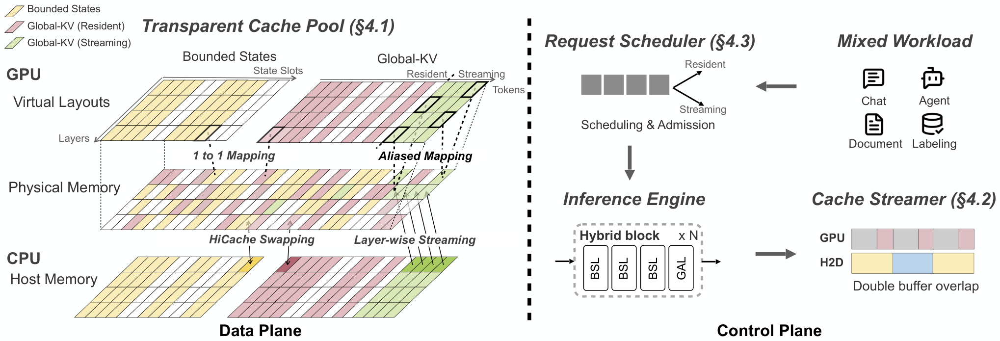
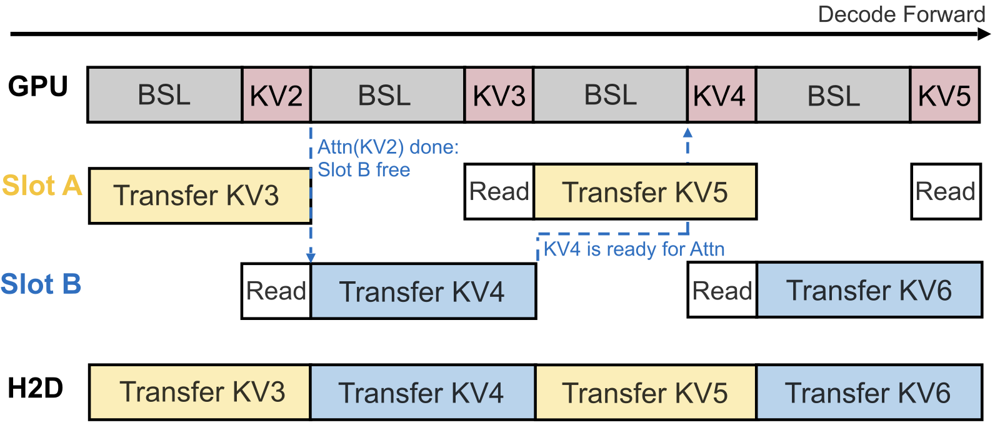
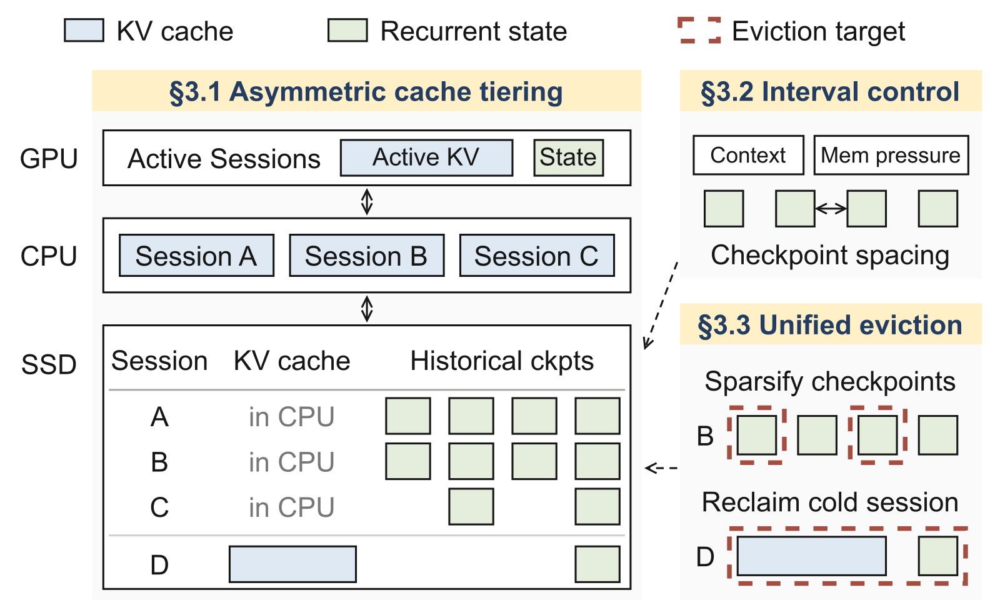
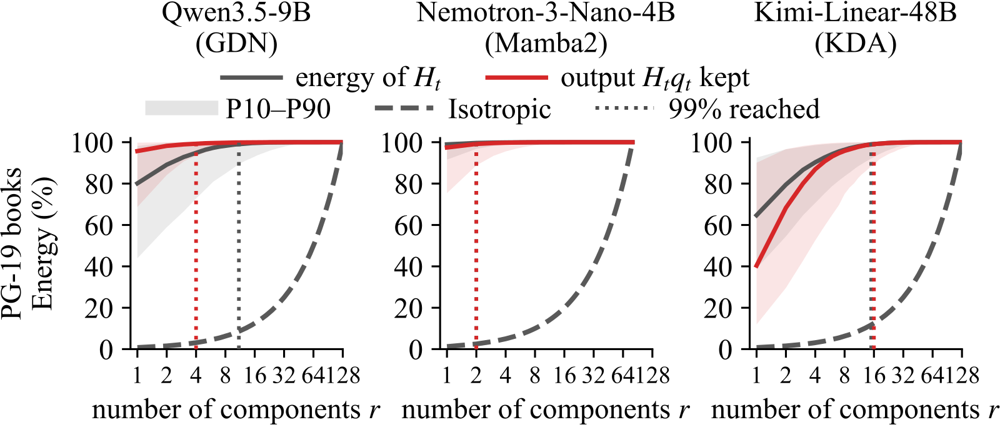
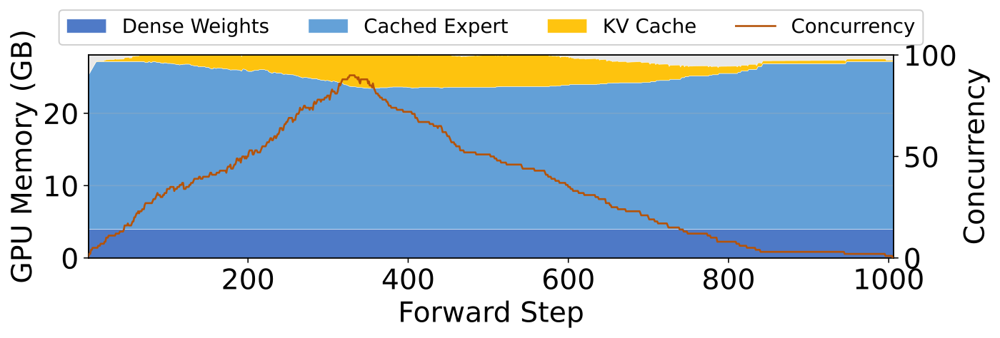
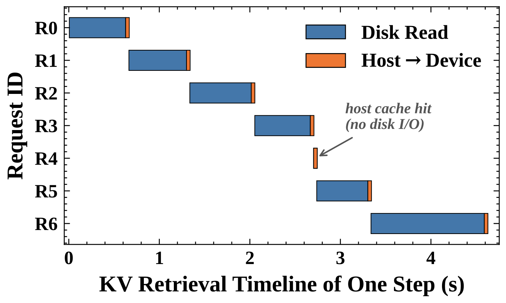
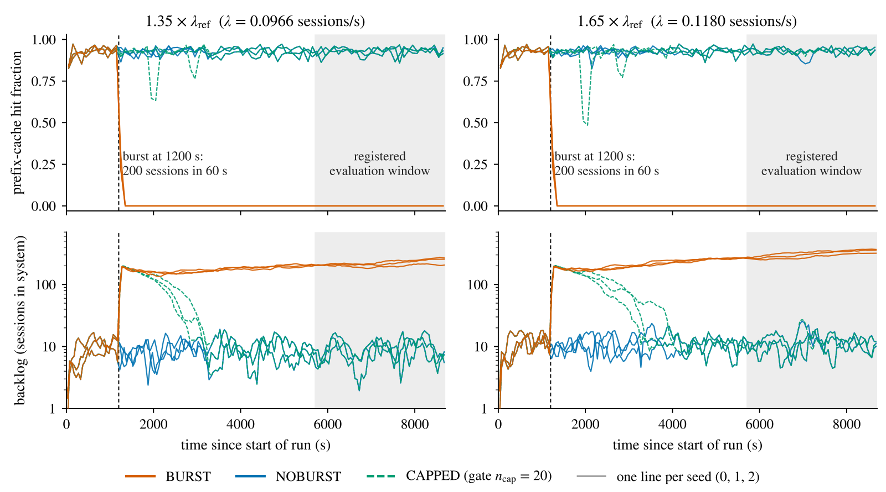
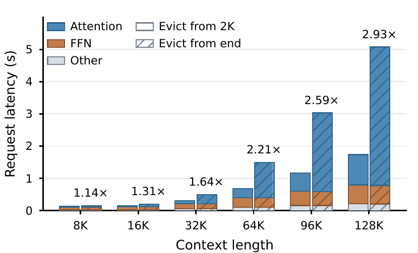
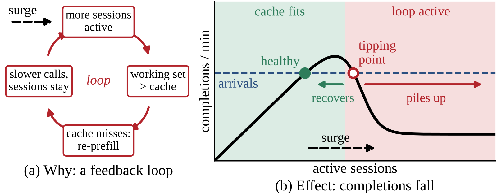
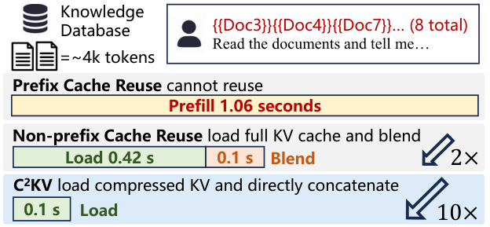

把旧 KV 移出显存，还得让空出来的位置有用
混合模型的服务系统可能同时遇到两种显存不足：长上下文让全局注意力的 KV cache 不够放，更多并发请求又把滑窗缓存或循环状态占满。给前者多留显存，后者可能更早耗尽；把前者卸载一部分，也不意味着后者就能用上腾出的空间。
TideCache 把这两件事一起处理：让不同缓存共享物理显存，再利用混合模型的层间计算时间，按层从主机内存预取历史 KV。请求只在需要某一层历史前缀时，把它放进可复用的 GPU 槽位。
它减少的是部分历史前缀的 GPU 驻留，并把释放的容量用于其他缓存和请求；新生成的 KV 始终留在 GPU。 这项工作由 麻省理工学院、苏黎世联邦理工学院与加州大学圣迭戈分校 的作者完成，实现在 SGLang 上。
两类缓存，争的是同一份显存
全局注意力需要访问此前所有位置，因此其 KV 随上下文增长。滑窗注意力只保留窗口内的 KV，循环层保留固定大小的状态；在模型与实现给定时，这两类状态不随上下文长度继续增长，但每个并发请求都需要一份。
所以，全局 KV 的需求取决于并发数与平均上下文长度的乘积，其他状态主要随并发数增长。不能简单把 agent 等同于长上下文、把聊天等同于高并发；真正决定瓶颈的是当时的缓存需求。
TideCache 的 Transparent Cache Pool 为各类缓存保留固定虚拟地址，却允许背后的物理 GPU 页在子池之间重新分配。使用缓存的 attention backend、索引和 CUDA graph 仍看到原来的布局，不必跟着改变。 Hoot 说

- 活跃物理页：不动
- 同一空闲物理页
- 未映射的虚拟行
- 先从空闲列表停用供给行，等此前计算完成，再解除旧映射并映射到接收子池；各 rank 在一致边界启用。
示意：格子表示各子池固定的虚拟行，颜色表示所映射的物理页；不是实际地址或实测容量。
出处
论文 §4.1 Transparent Cache Pool 与 Figure 5 的页移动协议。它并不搬走活跃请求正在使用的数据。需要扩容时，先找未分配页、其他子池的空闲容量，再考虑可驱逐的冷前缀。页移出空闲列表后，要等之前的计算完成，才能重新映射；多个计算 rank 在同一边界应用调整。

这种共享解决了分区不均，却没有增加 GPU 的总显存。要再容纳长历史前缀，还需要减少它们同时驻留的层数。
两个槽位轮流装入不同层的历史
混合模型并非每层都执行全局注意力。两层全局注意力之间，还有不访问整段 global KV 的滑窗或循环层计算。TideCache 利用这些间隙，把下一个全局注意力层的历史前缀从主机内存提前复制进 GPU。
Cache Streamer 用两个物理 slot，供多个全局注意力层轮流使用。各层仍通过自己的虚拟地址访问 KV，但这些地址会映射到同一组可复用的物理槽位。读取一个槽位时，另一个槽位可以预取后续层的数据。
历史前缀必须已经存在主机缓存中，才会采用这种模式。当前轮新生成的 KV 另放在常驻区域，等这轮结束后再由 HiCache 备份，不会每生成一个 token 就反复搬出搬进。相反，被流式读取的主机历史前缀在每个新生成步都会按层重新传入；槽位在新一步首次使用前，还要等上一步最后的读者释放。

这里最容易忽略的是复用的时机。上一层还在读，复制流就不能覆盖那个槽位；下一层的数据还没复制完，计算也不能提前读。
论文用 Free 和 Ready 两个信号协调。复制流等 Free、清除信号，完成复制后发布 Ready。图内的读取操作等 Ready、清除信号，最后一次读取结束后再发布 Free。每次消费都清除信号，避免上一步的就绪状态误放行下一步。
<details>
<summary>图解中的两槽复用顺序</summary>
示意图用四个全局注意力层共用两个历史前缀 slot，不代表实测层数或等长耗时。KV 后的编号表示全局注意力层序号。蓝色表示读取，绿色表示复制；层间还有其他计算。
| 先后阶段 | slot A | slot B |
|---|---|---|
| 开始 | 读取 KV 1 | 预取 KV 2 |
| 随后 | 预取 KV 3 | 读取 KV 2 |
| 再随后 | 读取 KV 3 | 预取 KV 4 |
| 最后 | 可复用 | 读取 KV 4 |
A 读完 KV 1 发布 Free，才能覆盖为 KV 3；KV 3 复制完成发布 Ready，才能开始读。B 同样先等 Ready 再读，读完发布 Free，才可预取 KV 4。消费后的信号清除。新生成 KV 位于独立常驻区，不经过图中 slot。传输晚到，读者仍等待；示意顺序不表示线上增益。
</details>
每次 replay 前，Cache Streamer 更新本步的行映射和复制参数。主机先在图外复制流提交每个槽位的首个传输，启动完整图，再提交其余传输；图内通过信号等待这些图外复制。这使复制地址和长度可以随请求变化，而完整 decode graph 仍只需启动一次。如果传输晚到，使用它的那层就等待，不能把流水线理解成传输永远免费。
流式读取不能覆盖所有请求
请求调度器还得判断什么值得搬。它先检查固定状态有没有空间，再根据常驻区压力、可复用历史前缀长度，以及当前已经流式读取的总行数，选择常驻或流式执行。槽位已满时，被选为流式执行的请求可以暂时跳过，让其他能执行的请求先走。
每一步能隐藏的传输量受持续带宽 BW（单位时间可传输的字节数）和计算时间约束。论文将可流式读取的行数上界写成：
C = η × BW × T / (L × b)
BW 是持续传输带宽，T 是计算时间，L 是全局注意力层数，b 是每行每层的 KV 字节数，η 留出调度余量。即使总传输量满足这个界，每一层的数据仍须在该层读取前到达。
因此，更多层共用两个槽位，不等于系统吞吐按层数成倍增长。收益还取决于链路、可重叠计算、主机中可复用的前缀，以及其他缓存是否有空间接纳新增请求。
端到端收益来自两种机制的配合
论文在 GB300 与 GH200（Grace Hopper 超级芯片）上测试了七种模型与平台配置。其中两款大模型采用截取层配置，不等同于完整模型的测量。负载是独立请求和多轮 coding agent 轨迹的混合回放，基线为采用较优已测分区比例的 SGLang 加 HiCache。
在受测内存压力下，完成的 agent 轮次最高达到基线的 2.04 倍。全部请求的 P50 每 token 延迟下降 20–59%，agent 请求的 P50 首 token 时间改善 1.40–3.05 倍。这些是跨配置汇总的范围，不应拼成单个配置的一组结果。
两种延迟也不能混用。每 token 延迟是请求端到端耗时除以实际输出 token 数，再取中位数，覆盖整个混合负载；首 token 时间只统计 agent 会话请求从提交到首 token 的耗时。二者都包含排队，不是纯 decode 计算时间。
变化负载实验更能看清分工。下面是 GH200 上 Qwen3.8-27B 的结果，来自论文图 10；各方法在同一测量窗口内回放相同的三阶段负载变化。
| 方法 | 完成的 agent 轮次 |
|---|---|
| SGLang，无 HiCache | 57 |
| SGLang 加 HiCache | 115 |
| TideCache，关闭 streaming | 174 |
| 完整 TideCache | 183 |
完整系统相对 HiCache 多完成约 59% 的轮次，但关闭 streaming 的动态分配版本已经达到 174 轮。不能把全部收益都归于按层传输。
加入 streaming 的直接对照是从 174 到 183 轮；agent 首 token 时间从 8.13 秒降至 5.68 秒。动态分配让释放的物理页能服务另一类缓存，流式读取再进一步减轻历史前缀的驻留压力。
这些结果来自 CPU–GPU 高带宽互连的混合模型环境。它们支持的工程判断是：要一起检查缓存分配和数据搬运，而不是只看卸载了多少 KV。没有足够的可重叠计算、可复用主机前缀或链路带宽时，同样的内存节省不一定转成同样的服务收益。
读完这篇，你觉得
夜读鸮记下了，谢谢你的反馈。
点一下即可，无需登录；再点一次撤回。只统计匿名次数，不记录你是谁。
相关论文RELATED

Infra · 2026-11-03HiState: Hierarchical Prefix Cache Management for Hybrid LLM Serving in Agentic Workloads混合模型的循环层会把整段前缀压成一个固定大小的快照，没法截短回更早的位置。所以 KV 明明还在，只要匹配位置的快照没存过或已被淘汰，就要从更早的快照甚至从头重算一大段。HiState 抓住一个不对称：一次缓存命中要读所有匹配的 KV，却只读一个快照，而且快照大小和上下文长度无关。所以它把大量历史快照放到 SSD，把内存留给 KV，并把快照和 KV 放进同一个淘汰队列。队列里每一项的分数是最近访问时间，加上删掉它后要多重算的 token 数除以它能腾出的空间，分数最低的先删。在两份公开的编程 agent 请求记录上，p99 TTFT 相对基于 vLLM 的 Marconi 最多加速 5.73 倍。快照多存不占快内存，每次命中也只从慢存储读一个。
Infra · 2026-11-13SinkState: On-the-Fly SVD of Recurrent States for Efficient Hybrid LLM Serving混合模型里的线性注意力层把历史压进一个固定大小的状态矩阵，解码时每一步都要把它整块读出再写回。batch 一大，这部分显存读写就占了解码时间的大头。作者发现这些状态其实是低秩的：线性层每一步写进和读出状态的向量集中在一个很小、而且不随内容变化的子空间里，少数几个分量就能还原 99% 的状态。SinkState 让每个状态在推理全程以低秩形式存放，新来的更新先攒几步，再只在头部几个分量上做小规模 SVD，其余部分交给 CPU 异步合并。在四个混合模型上，状态显存峰值最多降 2.6 倍，解码最多快 1.58 倍，精度基本不变。线性注意力的状态还有很多冗余可以压，用混合模型做长序列服务时，省下的显存能直接换成更大的 batch。
Infra · 2026-11-02Rimuru: Unified Memory Management for Modern LLM Serving via Elastic Expert Offloading把 MoE 模型的专家权重和 KV cache 放进同一池显存，按负载随时调整两边各占多少，显存有限的机器就能接住更多并发请求。Rimuru 就是这样的推理系统：请求多时把用得少的专家移出显存，给 KV cache 腾出页，请求少时再把专家搬回来。为此它改写了 MoE 计算核，直接读取不连续存放的专家权重。现有的专家卸载系统在启动时就把显存切成固定的两块，请求一多 KV cache 就不够用。在显存刚好放得下全部权重的 5090 机器上，Rimuru 主动移出一部分专家来接更多请求，吞吐是权重全放显存的 vLLM 和 SGLang 的 1.1 到 2.88 倍。
Infra · 2026-10-26KVStream: Adaptive Parallel Storage Management for KV Caching in Large-Scale LLM Serving长上下文推理会反复用到同一段前缀，比如系统提示、整份文档、代码仓库和多轮会话历史。这些前缀的 KV cache 早已放不进 GPU 显存和主机内存，只能落到硬盘上，下次命中再读回来，读盘就卡在了每一步推理的关键路径上。现有系统只读节点本地的 NVMe，集群早已挂载的并行文件系统却几乎闲着。这篇论文做了 KVStream：每块 KV 在本地盘和共享存储各写一份，读的时候两边同时读，谁先读完谁接着领下一批。接进 LMCache 实测，离线吞吐最高是 LMCache 的 1.49 倍，突发流量下平均 TTFT 最多快 6.1 倍。
Infra · 2026-11-10Inside the Trap: A Renewal Law for Prefix-Cache Collapse in LLM Agent ServingLLM agent 的多轮对话靠前缀缓存省掉重复计算，但这篇论文发现一个陷阱：突然涌进一大批会话后，引擎可能掉进每一轮都不命中缓存的状态，积压再也消化不掉，哪怕这个负载它以前扛得住。作者在两种推理引擎、两种 GPU、两个模型上做了配对测试，200 个会话的突发让 30 次运行全部卡死到结束，没有突发的对照运行则都正常。作者把卡死状态抽象成每轮都不命中的排队模型，算出积压怎样增长。出路也简单：限制同时在跑的会话数，就能在同样负载下把已经卡死的引擎救回来。做 agent 服务，不能只看平均负载，还要防突发把缓存冲垮。
Infra · 2026-11-04Rethinking KV Cache Eviction for Agentic LLM ServingKV cache 放不下时，vLLM 和 SGLang 都从缓存序列的末尾开始删，为的是保住开头那段能被很多请求共用的前缀。但 agent 每一轮都会把很长的历史重新发回来，而越靠后的 token 重算越贵，因为它要和前面所有 token 算注意力。Penelope 反过来做：共享前缀照样保留，剩下的历史从靠前的部分开始删，留住靠后的部分。请求回来时，只重算缺掉的那一段。在 SGLang 上用真实 agent 请求记录测，只用 GPU 缓存时平均首 token 延迟最多降 60%，再加上 CPU 内存做第二层缓存时最多降 76%。该删哪一段，要看重算它要花多少，而不只看它被多少请求共用。
Infra · 2026-11-04When Cache Pressure Becomes a Trap: Metastability in Agent Serving一阵十分钟的流量高峰，就能让 prefill 和 decode 分离部署的 agent 推理服务一直恢复不了。高峰过去、流量回到原来的水平以后，在 SGLang 上之后一小时的有效吞吐仍下降约 88%，而且故障前利用率和队列长度几乎看不出征兆。背后是一个循环。缓存不够导致重算，调用变慢，会话结束得更晚，在线的上下文更多，缓存就更不够。作者据此做了 Basin，按预估的每个会话最长上下文从一个总额度里预留，额度不够就让新会话先排队。在真实 GPU 上，一个不带预测器的简化原型，有效吞吐已是此前最强方案 Continuum 的 1.20 到 1.70 倍。
Infra · 2026-07-22C 2 KV: Compressed and Composable KV Cache Reuse for Efficient LLM Inference检索增强生成要把多篇检索到的文档拼进上下文，每次都从头算这些文档的 KV 缓存很贵，于是有方法把每篇文档的 KV 缓存存起来、用时直接拼接。但长文档的 KV 缓存很大，存储和读取本身成了瓶颈，直接压缩后再拼接，准确率又会明显下降。上海交大和阿里巴巴的这篇论文提出 C2KV，在冻结的原模型旁加一个轻量提取器：把几个可学习的压缩 token 接在文档后面一起读，只留下这几个 token 的 KV 当作这篇文档的缓存。缓存存的时候不带位置，拼接时再按新位置补上位置编码，所以能像积木一样任意组合。在长上下文下，推理最多快 17 倍，生成质量基本不变。
讨论
欢迎补充实验细节、复现经验或不同看法。需 GitHub 登录。
正在加载讨论…